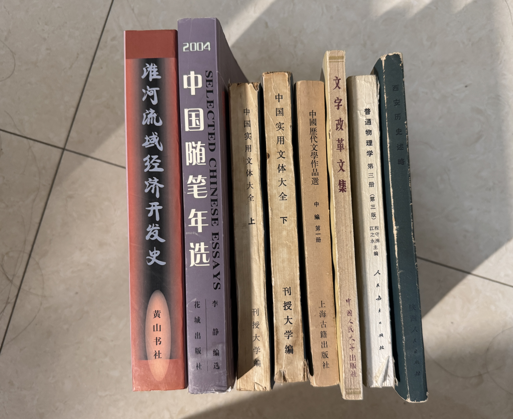

书

因为我去年来西安的时候买了一本叫《西安历史述略》，他是陕西人民出版社出版的，因为我觉得我了解世界，我会很喜欢从一个地方出发（博物馆也是从一个地点出发），同时如果我可以通过他的历史自己去找到我喜欢的景点去看遗迹，尤其在西安这个地方我就觉得很好玩；这本书后面我看了也觉得研究的蛮有意思的，像这本书他是很早很早的时候的时候是在1979年8月出的，我买的这一版是98年10月印刷的，这个作者他好像是在陕西省博物馆做的研究，所以其实是非常有研究逻辑的，包括他研究东西很广泛，他是从西安的这个地方出发，就类似于史记是按照人物来来做历史的研究的和技术的这本书，他就是通过地方来研究，我很喜欢这种地点作为了解历史的方式。我之前还看了一本书，他讲到地理对历史走向的影响，我对地理也很感兴趣，在这本书里，他是以时间为一个技术单位的，包括很多地理有关的问题，他有话很多地图，这也是我很喜欢这种书原因。
所以呢，我今天又看到了这样一个二手的书店，我就留意了一下，在路边，挺热的。今天买了有这些：
《普通物理学第三册》这是人民教育出版社出版的，是1981年5月印刷的版本，当时定价是一块钱，现在我买他需要花八块钱。这本书我购买它的原因是他的曾经的拥有者在上面做很多的勾划，我感觉还挺有感觉，书里学到了电磁波，甚至提到了量子力学的基础，我以为量子力学是一个很新的，但其实那个时代他已经有了；同时也可以看到物理的发展对于教材的一种变化。另外呢，我也听说过有一些教育者认为教材的改版总是改的越来越不好了，所以我想去看看以前的教材是什么样的。
《文字改革文集》它的封面上有一个印章，应该是来自于某个工厂的图书室，然后在扉页上还有以前的这个人他的签名和印章。我看这本书是因为我觉得如果是从语言学的角度来说，我们的普通话以及拼音等等在众多语言中作出的这种选择和普及方式，我觉得其实是很有了解的意义的。但是这本书他并不是一个研究，他是一个收集了作者发表过的文章报告和讲话的一个文集，是中国人民大学语言文字研究所支持的。在找老书的过程中，我也会比较关注他的出版社，这也可以看出以前那些出版社他确实是有一个专门的出版方向的。可能越到后面的时候他就越来越合并，不再说某一个特定出版社会极大的对某些事情进行关注。
这些书他肯定都会有一些时代的局限性了，但是我一个可以在稍微过了一段时间之后回看的人，这些局限性其实也是他有趣的一部分。还有一本书叫《中国历代文学作品集》，他有四册，每册有上中下。但是今天的地方只出现了四本，我就挑选了第一册的中篇，因为他是隋唐五代部分，也是我认为中国文学最发达的时期。选择的一个原因是因为我看到他不仅涵盖了诗还涵盖了散文和传奇，还有词，那其实一般来说唐朝我看的都是诗嘛。这样的一些文体其实也很有意思；还有一点就是这本书里他会有解题，会包含一些背景知识，其实现在的古文观止也有啊，排版也更精致了。不过这本书是繁体，他是上海古籍出版社出版的，定价是¥3.35，印刷的时间是1992年，而且已经是第13次印刷了，他是高等学校文科教材。高等学校是指大学还是高中？我不知道。
接下来是买了一个上下套的《中国实用文体大全》，他是刊授大学编，刊授大学是一种业余的高等教育，也是一个很有趣的知识点。我了解了一下刊授大学在九零年前其实都是非常严格的。这本书曾经的拥有者在书的封面和扉页都盖上他的章。这个书涵盖了几乎我能想到的所有实用文体，他讲了。。。。。真的是在那个年代有很多人非常的想要去学习，但是教育资源不足，所以产生了各种模式来帮助学习，比较感动。
《中国随笔年选2004》千禧年到零八年之间确实是有很多百花齐放的感觉，这是我听说。这本书的扉页上写的是2014年购于淘宝网。我觉得很有意思，我选书的时候大概看去看了几篇，我觉得随笔是个很有意思的东西，自己偶尔也随笔几下，这个感觉很好。所以想看看那个年代的随笔，现在我身边还是有同学在写随笔的，但是文学体裁一定是会发展的，现在更多的是社交媒体上的短篇抒发和片段，还有用AI润色编辑一下的文字，想看一看大概20年前的随笔是什么样的。
《淮河流域经济开发史》他的出版社是黄山书社，我不是很了解这个出版社，但是就像我去年买的《西安历史述略》一样，我非常喜欢从一个地理的角度去串联历史和经济的研究，而且淮河确实是在初中的地理上就知道的地理意义，所以很想了解一下。这本书的话，他其实已经比较现代了，他是2001年印刷的，定价是¥48。在那个年代我不知道算不算一个比较贵的书，而且这本书比较新，他在开篇列出了很多很多的名称，从各个朝代和各个地点去列举出了周围的各种地名。地名也是一个我很喜欢的东西，例子就是庐州合肥的名字变化。小时候看天气预报，以为合肥是专门卖化肥的地方，所以地名也是有意思的东西。
但是我觉得很难啊，这么多书，肯定也不一定说真的都会读，但是先相逢即是缘了，万一哪一天想读或者说就是看一看。
传记作者记录速度尚未跟上传奇创造速度